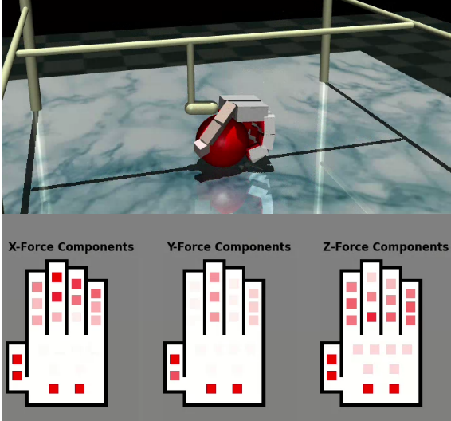
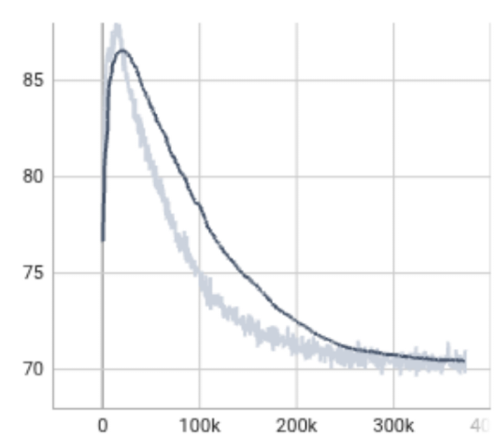
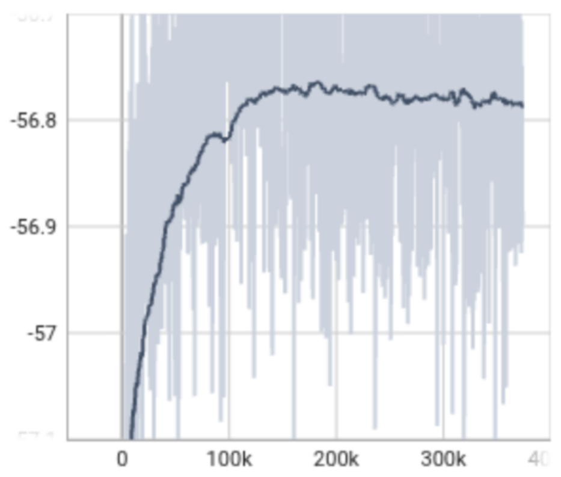
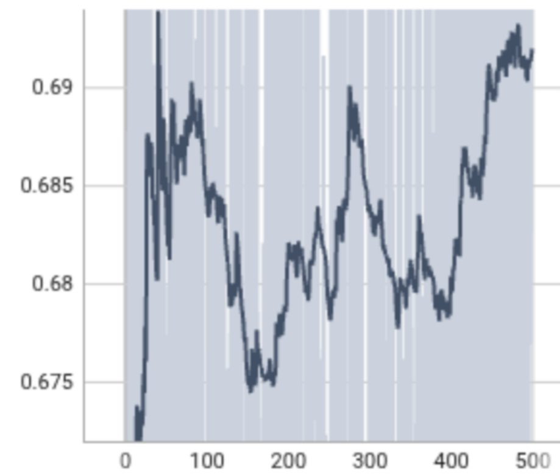

Training Demo

Robotic grasping in unstructured environments often fails when visual feedback is compromised by occlusion or clutter. While tactile sensing offers a robust alternative, achieving “blind” grasp acquisition with anthropomorphic soft hands remains challenging due to high-dimensional actuation and the partial observability of contact states. This work presents a reinforcement learning framework for tactile-driven grasping using a 17-DoF soft anthropomorphic hand. We introduce an Attention-augmented Soft Actor-Critic (SAC) architecture that aggregates temporal tactile features to resolve contact ambiguity without visual state estimation. The policy is bootstrapped via Behavior Cloning from a privileged heuristic and refined under adversarial contact dynamics. Extensive validation in MuJoCo demonstrates that our blind policy significantly outperforms the privileged heuristic baseline, achieving success rates of up to 65% on primitive geometries. The policy learns to modulate finger stiffness to actively reject disturbances, establishing that temporal tactile learning alone is sufficient for robust, autonomous grasp acquisition.
The policy receives a 112-dimensional state: 66 dimensions of tactile data from 22 three-axis force sensors distributed across the palm and fingers, plus 23 joint positions and 23 velocities. No visual input reaches the policy at any point.
Temporal attention encoder. A single observation is ambiguous -- a contact force spike could mean a good grip or a slip. The encoder processes a sliding window of N = 16 consecutive observations through six Transformer blocks (8-head self-attention, dmodel = 256), then collapses the sequence via temporal mean pooling to a fixed 256-dimensional latent. This lets the policy track how contact evolves over time, not just its current state.
Independent encoders per network. The SAC architecture has five networks: Actor, two Critics, Value, and Target Value. Each carries its own encoder with separate weights. Sharing one encoder would mix gradients from multiple loss objectives (actor loss, Bellman error, value regression), corrupting the learned representation. Independent encoders eliminate this interference at the cost of compute.
Bootstrapping and adversarial training. Training starts cold in a high-dimensional action space with sparse reward -- the agent would explore randomly for thousands of episodes without a warm start. We seed the replay buffer with ~350k transitions from a privileged heuristic controller using Behavior Cloning (~17.5% of buffer capacity). This gives the policy a starting point to improve from. After bootstrapping, SAC trains under adversarial contact dynamics: friction is set to μtrain = 0.5×nominal. Slippery contacts prevent the policy from exploiting sticky simulation artifacts and force it to learn genuine force closure. During adversarial training, success rates are near 0% -- the diagnostic signal is rising mean object height and stable loss, not task success. The policy then zero-shots to nominal physics at evaluation.

X, Y, and Z force components across the 22-sensor array during active contact. The policy processes 16 consecutive frames of these readings via the attention encoder.
Evaluated over N = 500 episodes per geometry in nominal physics (μ = 1.0). Success on the full lift task requires holding the object at ≥30 cm above the initial position for 200 consecutive control steps (~2 seconds at 100 Hz). The baseline heuristic has access to ground-truth object pose but was deliberately tuned to ~50% success -- it serves as an imperfect demonstrator seeding the replay buffer, not an oracle upper bound.
| Geometry | Heuristic (full lift) | SAC (grasp init.) | SAC (full lift) |
|---|---|---|---|
| Box | 57.2% | 100% | 65.1% |
| Cylinder | 44.1% | 100% | 62.8% |
| Sphere | 35.9% | 100% | 53.3% |
500 episodes per geometry, nominal physics. "Grasp init." = any valid lift; "Full lift" = hold at ≥30 cm for 2 s. The MLP ablation (same history, flat encoder) achieves <15% on Box, confirming that temporal structure drives the improvement, not just history length. Results are from a single training run; variance across seeds is future work.

Actor loss

Policy entropy

Mean object height
Adversarial training dynamics (μ = 0.5). Left: actor loss converges. Center: policy entropy stays high, preventing collapse. Right: mean object height rises as the agent learns to lift slippery objects -- even before it can hold them. Near-zero task success during this phase is normal; the rising height curve confirms the policy is learning to lift.
@inproceedings{bernardini2026grasping,
title={Grasping in the Dark: Temporal Tactile Learning for Blind Grasping with Underactuated Soft Hands},
author={Bernardini, Daniele and Deshini, Suraj and Klostermair, Lukas and Piazza, Cristina},
booktitle={Proceedings of the International Conference on Robotics, Control and Automation (ICRCA)},
year={2026}
}